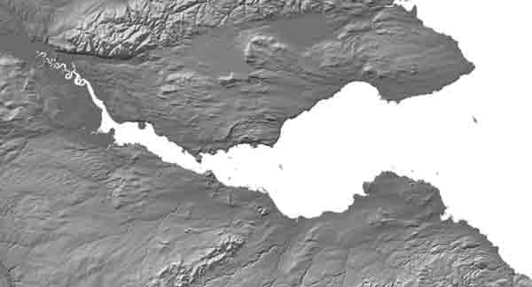

Natural
Firth of Forth
Significance: a valley carved below sea level by the Forth ice stream and drowned by post-glacial sea level rise

The firths of the east coast of Scotland are fjörds - the valleys have been over-deepened by glacial erosion and subsequently invaded by the sea. During the cold stages of the Pleistocene ice advanced from the south-west Highlands and was channelled through the existing Forth valley at Stirling. Erosion was most intense beneath the zone of most rapid flow of the ice stream, particularly where the ice was funnelled between the Ochils and the high ground south of Cambusbarron.
The Firth of Forth is a broad funnel-shaped fjörd. Beneath the estuary and its sediments lies a rock floor that locally extends well below sea level. Careful collation of borehole records by Brian Sissons has revealed the complex form of the rock head profile of the Forth Valley. West of Stirling rock basins have been gouged from the soft Carboniferous sedimentary rocks to a depth of 200 m below present sea level. The resistant sill on which Stirling Castle sits has been lowered, dissected and streamlined. Deep tunnel valleys, probably cut by glacial meltwater moving under pressure, run along the foot of the Ochils and down the axis of the Firth of Forth. The deepest part of the Forth valley is off Grangemouth, where rockhead lies at z metres below sea level. Other basins occur upstream of the Forth Bridge and sea bed east of the bridge has high relief, with the islands of Inchcolm, Inchcape, Cramond and others rising abruptly from a sea floor at -20 m. East of Edinburgh the floor of the Firth of Forth generally lies around -40 m, only deepening to -60 m off St Abbs. Rockhead generally lies only 10-15 m beneath the sea bed. The deepest part of Firth swings around the headland at North Berwick.
The shores of the Firth of Forth show a sequence of raised beaches which provide a detailed record of the pattern and timing of sea level change during and after ice retreat. On the floor of the Forth the muddy sediments of the St Abbs and Forth Formations record the change from glacimarine to marine sedimentation over the past 15,000 years (Gatliff, et al., 1994).
The History of Kinghorn Loch - Ron Edwards - The geological, agricultural and industrial history of the loch including it's recovery from severe pollution
Kinghorn Loch and Spillway
A case study on the Recovery of Kinghorn Loch. - The loch is now a thriving natural habitat due to the recovery process.
A Kinghorn Coastal GeoWalk - "The beach exposures from Burntisland to Kirkcaldy give ample scope for geological studies, especially the Abden shore which provides an excellent illustration…of Lower Carboniferous rocks”.The field site considered here is a coastal strip of these rich and excellent geological features a short distance north of Kinghorn, Fife. It is about 1 km long extending from a small bay at NT 275874 to the nortend of another embayment at NT 280882."